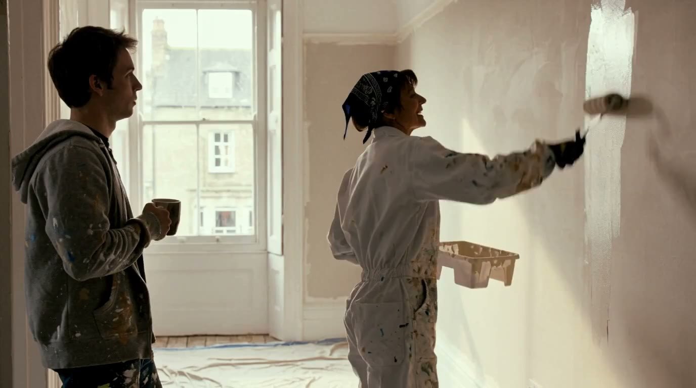

How low can the GEMM precision of MiniMax H3 go on Blackwell before you can see or hear it?
On sm120 cards the only native 4-bit tensor-core path is NVFP4 (fp4 values, fp8 block scales). We measured what that costs in a video+audio diffusion model two ways: first by simulating fp4 activations on chosen projections, blocks and token segments of the shipped W4A8 model (fake quantisation, one region at a time, 40+ same-seed arms), then by building real NVFP4 checkpoints and rendering the same scenes on the native fp4 kernels. Every clip below sits next to pixel, flow and audio rulers, with a synced head-to-head player: pick any two arms, flip them, wipe between them, and choose which side you hear.
Every perturbed render is a sibling take of the reference: same scene and words, slightly different delivery. Distance from the reference does not rank quality inside this family. The control that proved it: the highest-fidelity int8 checkpoint (1 percent weight error) landed in the same distance band as full NVFP4 and moved the audio track more than any fp4 arm.
Measured speed of the real all-NVFP4 checkpoint against the shipped W4A8 file, same seed and graph: 0.84x wall on the 29k-token scene, 0.90-0.91x on the 45k-token scenes, with identical file size. The mixed regimes (keeping fc2 or the rim blocks at higher precision) bought no measurable quality back on any ruler.

Rulers rank dose and name what changed; the verdict on any single clip belongs to eyes and ears. Cost columns marked [PROJ] are projections from GEMM microbenches, everything else is measured.
github.com/matlowai/ComfyUI-MAINodes